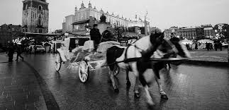
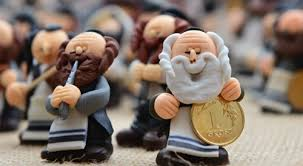

Średniowieczne korzenie i biblijny Emaus
Historia tego miejsca zaczyna się w XII wieku, kiedy
na krakowskim Zwierzyńcu ufundowano klasztor Norbertanek.
Sama nazwa „Emaus” pochodzi z Ewangelii św. Łukasza i opisuje
drogę zmartwychwstałego Chrystusa do wsi o tej nazwie. Dlaczego
jednak Kraków? W Europie średniowiecznej
istniał zwyczaj odwiedzania w drugi dzień świąt kościoła
położonego poza murami miasta, co miało symbolizować
właśnie tę biblijną wędrówkę.
Pierwsze zapiski
o krakowskim odpuście
pochodzą z 1596 roku,
ale tradycja
jest prawdopodobnie
znacznie starsza.
Było to wielkie
wydarzenie społeczne.
– historycy podają, że w XVI i XVII wieku w Emausie brali udział królowie polscy, m.in. Zygmunt III Waza, traktując to jako obowiązkowy punkt obchodów wielkanocnych

Drzewko Emausowe - Przedchrzescijanski relikt?
Drzewko emausowe to nie tylko „ładna ozdoba”. Jego
korzenie sięgają przedchrześcijańskich wierzeń słowiańskich, w
których Drzewo Życia było łącznikiem między światem bogów a ludzi.
Po chrystianizacji tradycja ta przetrwała w formie pamiątki odpustowej.
Tradycyjne drzewko musiało mieć konkretną formę: pionowy
kijek, na którym osadzano gniazdo, a w nim figurkę ptaka
(kukułki lub koguta). Ptaki te w dawnej kulturze ludowej symbolizowały
dusze zmarłych powracające na ziemię wiosną. W XIX wieku drzewka były
kupowane masowo jako talizmany – wierzono, że zatknięte za obraz
w domu, chronią przed burzą i pożarem. Były to najpopularniejsze zabawki odpustowe obok glinianych gwizdków.
Drzewko Emausowe - Przedchrzescijanski relikt?
W XIX i na początku XX wieku Emaus był największym festynem w Krakowie. Historyczne kroniki wspominają o:
-

Wielkiej paradzie: Mieszkańcy Krakowa całymi rodzinami szli pieszo wzdłuż Wisły na Zwierzyniec. - Zabawkach „śmierciach”: Ciekawostką historyczną są figurki żydowskich grajków i „śmierci” z kosą, które kupowano na straganach jako amiątkę przemijania.
- Ratowaniu tradycji: Po II wojnie światowej tradycja drzewek niemal całkowicie wygasła. Dopiero w XXI wieku Muzeum Krakowa zaczęło organizować konkursy, by odtworzyć historyczny wygląd drzewek na podstawie opisów etnograficznych i zachowanych nielicznych egzemplarzy z okresu międzywojennego.